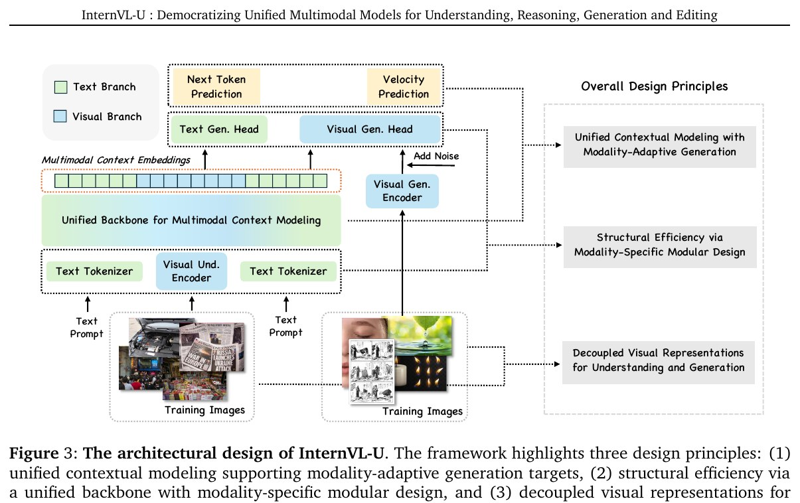
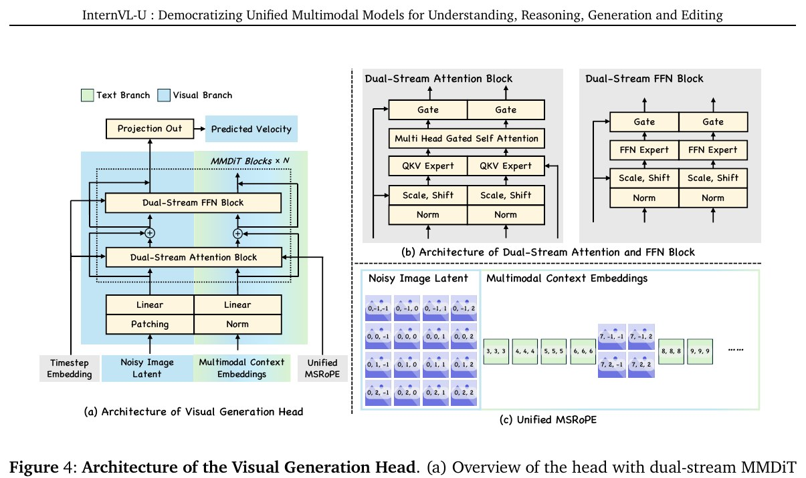
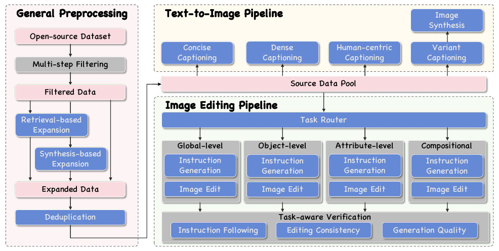

速览
版本说明：本页依据 arXiv v1（2026-03-10 发布，页眉印 2026-3-11）全文核对。
五句话看懂
理解和生成分开表示
理解侧用 ViT 语义特征进自回归骨干；生成侧用独立 VAE latent，由 MMDiT 头以骨干隐状态为条件做 Flow Matching§3.1.1。总参数 4B，不到 BAGEL（14B）的三分之一摘要 表 4。
先冻骨干训头，最后全量解冻
S1 冻结骨干，512px 训 250K 步；S2 换任意分辨率训 60K 步，并把条件图 VAE latent 注入生成头；S3 解冻全部参数，混入理解数据与 CoT 数据训 20K 步§3.2.2 表 3。
数据瞄准“高语义密度”
文字渲染与 OCR 驱动的文字编辑、SVG 物理编辑（单样本成本 $0.16 → $0.03）§4.4.2、程序化 CS / 几何 / CAD、Objaverse 旋转、梗图，所有指令再做 CoT 增强§4.3–4.7。
CoT 对知识和推理类任务帮助最大
WISE 0.46 → 0.58表 13，RISEBench 3.6 → 9.4表 19，GEdit 6.66 → 6.88表 16；文字编辑在 TextEdit Real 子集上 MLLM 均分 0.88，BAGEL 为 0.53表 18。
没有消融，理解有回落
门控注意力、MSRoPE 插值、数据管线都没有消融。与同表的 InternVL3.5-2B 相比，MathVerse 53.4 → 45.6、LogicVista 47.7 → 40.3表 4，降幅 7–8 分推算，而正文说的是“minimal degradation”。
架构：MLLM 骨干 + 专用 MMDiT 生成头
论文把设计归纳为三条原则：统一上下文建模但目标按模态区分、按模态模块化、理解与生成表示解耦§3.1.1。属于“外挂生成头”这一路线，和完全原生训练的统一模型是两回事。


双投影 + 方差归一化 §3.1.2
上下文隐状态与 VAE latent 各用独立线性投影。作者观察到上下文嵌入幅值更大、离群值更多，于是在 VLM 分支投影前加一层归一化，把方差拉到 1，以稳定训练。
MMDiT 内的门控注意力 §3.1.2 式 1
O′ = O ⊙ σ(XWg)，Wg 每个流各一份；目的是增加非线性、缓解高分辨率长上下文下的 attention sink。作者称这是门控首次用在 MMDiT 里，没有给对比实验。
Unified MSRoPE + 分辨率插值 §3.1.2
位置索引范围按最大目标分辨率（如 1024px）定义；512px 预训练时用满整个范围，只把相邻 token 的步长放大，避免高分辨率微调时直接外推带来的“tiling artifact”。
编辑条件的两条通路 §3.2.2
条件图先以 ViT 特征进入上下文骨干；从 S2 起另把条件图的 VAE latent 显式注入生成头，以提升像素级一致性。具体拼接方式原文没画出，本页不作推测。
训练目标与 CFG 设置§3.2.1 §5.1
- 文本
- 标准 NTP 交叉熵（式 2）
- 图像
- Flow Matching，线性插值路径 zt = t·z1 + (1−t)·z0，回归速度 z1 − z0（式 3）
- 总损失
- α·LNTP + β·LFM，按阶段调整；表 3 给出 NTP:VP = 0:1（S1/S2）、1:20（S3）
- 条件丢弃（训练）
- T2I：10% 丢弃全部条件；编辑：5% 丢弃文本 + 图像，另 5% 只丢文本保留图像
- CFG（推理）
- 丢全部条件的尺度 3.5；编辑任务里只丢文本的尺度 1.5
- 无条件占位
- 丢弃全部条件时用 “Here is a random image <img_uncond>:”，<img_uncond> 为可学习特殊 token（图 19）
- 系统提示
- T2I / 编辑各有一段中文系统提示，要求描述颜色、形状、文字内容、空间关系等；送入生成头前截断这部分嵌入（图 19）
数据：开源池 + 六条合成管线 + CoT 改写
论文的核心判断：生成模型的训练数据多是纹理丰富但语义稀疏的自然图，理解模型的数据（GUI、信息图、文档）纹理简单但语义密集，这种分布差异是统一模型“好看但不聪明”的主要原因§1。数据部分围绕补齐这块展开。注意：除化学数据和 TextEdit 外，原文没有给出任何一条管线的样本量。

4.1 开源数据池
T2I：12 个数据集 表 1
LAION、BLIP-3o、ShareGPT-4o-Image、OSP、Echo-4o-Image、OpenGPT-4o、FaceCaption、Flux-Reason-6M、HumanCaption、POSTER-TEXT、AutoPoster、CTW。人像与含字图是专门补的长尾§4.1。
编辑（IT2I）：19 个数据集 表 1
InstructPix2Pix、AnyEdit、PIPE、ImgEdit、SEED-Data-Edit、OmniEdit、UltraEdit、HQEdit、ShareGPT-4o-Image、OpenGPT-4o、X2Edit、X2I2、UniWorld perception、NHR-Edit、GPT-hqedit / omniedit / ultraedit、Nano-consistent-150k、Pico Banana。
数据集个数为本页按表 1 清点推算；各数据集实际用量与采样权重原文未披露。
4.2 通用预处理与合成
4.3–4.7 专项合成管线
| 管线 | 任务 | 来源 / 生成方式 | 过滤与验证 | caption / 指令 |
|---|---|---|---|---|
| 文字 · 渲染§4.3.1 图 8 | T2I | 把原 caption 直接渲染到自然图上；另在纯色底上渲染纯文本。随机采样遮罩底图（牛皮纸 / 白纸 / 木纹）、字色、中英字体、自适应排版，字号随长度自动缩放并断行 | 按宽高约束搜索字号（图 8） | 渲染后用 Qwen2.5-VL-72B 重写 caption |
| 文字 · 编辑§4.3.2 图 9 | 编辑 | PaddleOCR 取文本、置信度、多边形 → Qwen2.5-VL-72B 选区并写编辑指令 → Flux-Text 按多边形与新文本生成 | 由 MLLM 筛候选区域，校验文字相关性与视觉一致性 | “Replace the text ‘A’ with ‘B’” 式显式指令 |
| 科学 · 通用 T2I§4.4.1 B.1 | T2I | 开源科学理解数据集、教材、竞赛（IPHO、高考、考研）、网页 | 去掉 <256p；p-hash 去重；剔除与 §5 评测基准相同的图；Qwen3-VL-8B 按 5 维打分（图类、学科、文字长度 >200 字符剔除、复杂度如 5–7、知识密度如 7–8） | Qwen3-VL-32B 写 caption |
| 科学 · 化学B.2 | T2I | PubChem 抓 800,000 条（CID、名称、分子式、SMILES、2D 结构图） | 清洗后剩 600,000 条 | QA 模板合成 600,000 对图文数据 |
| 科学 · 物理 SVG§4.4.2 | 编辑 | PaddleOCR 从教材 / 试卷抽图与上下文 → Gemini-3-Flash 把原图转成 SVG，决定原图作输入还是输出，并写出另一张图的 SVG 与编辑指令 → 渲染成图对 | Qwen3-VL-8B 先剔除插画、实拍、公式、难转 SVG 的图；Gemini-3-Flash 再剔除富文本、物理结构或标注错误 | Gemini 原始指令很详细，作 CoT；训练指令是提炼后的简短隐式版 |
| 科学 · 计算机§4.4.3 B.3 | 编辑 | 15 类任务：树 6、图 6、FSM 3；树和图用 matplotlib，FSM 用 Graphviz（circo） | 节点固定锚点保证图对一致；计算节点间、节点与边的距离，有重叠即丢弃 | 传统求解器解题 → 步骤映射到 13 个人工模板 → Qwen3-Max 改写增加多样性 |
| 空间 · 立体几何§4.5.1 B.4 | 编辑 | GeoGebra / matplotlib：旋转体、面对称、点对称、平移、投影 5 类；顶点数 [3, 6]，平移量 [4, 10] 整数 | 参数约束保证可见、不退化 | 原文未单列 |
| 空间 · 多视图 CAD§4.5.2 | 编辑 | ABC 数据集 + OCC 库渲染等轴测 / 正 / 侧 / 俯视图，随机颜色与材质 | 原文未单列 | “根据等轴测图生成正视图”等 |
| 空间 · 旋转§4.5.3 图 13 | 编辑 | Objaverse 均匀角度渲染；每个物体生成 4 张带背景参考图；两种策略：Object-First（Qwen-Image 合成编辑图）/ Background-First（FLUX.1 Kontext 抠掉物体得到干净背景，再贴入其他朝向的物体） | bbox 宽高比限定在 [0.9, 1.1]，排除旋转后出界；朝向一致性；融合质量取最高分；Object-First 再用 GPT-5.1 查朝向和背景一致性；Background-First 用 Qwen2.5-VL 验证抠除成功 | 由参考图写富上下文指令（Object-First） |
| 梗图§4.6 图 15 | T2I + 编辑 | 爬取网络与开源梗图，5 段：VLM 判断是否有字 → captioner 写模型风格描述 → CoT captioner 写用户风格短提示 → 有字则去字、无字则加字，构成图对 → 生成与图对严格对齐的编辑指令 | 原文未给阈值 | 同一张图同时保留 model-style 与 user-style 两种提示 |
4.7 推理型数据：CoT 当“翻译层” §4.7 图 16–18
把短而抽象的指令改写成带目标、子任务、可验证约束、有序操作的规格。对构建数据集里的所有指令都做了 CoT 增强§4.7。
- 通用 T2I：展开物体、背景、风格细节
- 通用编辑：补定位参照、要改 / 要保留的属性、视觉一致性约束
- 知识型：如“中秋传统食物” → 月饼外观；“放一周的香蕉” → 褐斑
- 梗图：场景细节 + 幽默结构 + 版式约束（字放哪）；编辑还要写明哪些区域不变
- 科学：概念分析与版面规划；物理用摘要前的详细指令，CS 用求解步骤
编辑 CoT 样本里还附了评分 图 16
图 16 的通用编辑示例同时展示了“原指令 → CoT → 增强指令 → 结果评分”，评分维度为 Object Identity / Mask Precision / Visual Quality（1–5），并附 Brief reasoning。正文没有说明这套评分如何参与数据筛选。
CoT 由哪个模型生成：知识型写的是“open-source models”，CS 用 Qwen3-Max 改写模板，其余未写明§4.7。
已披露规模
| 项目 | 数量 | 来源 |
|---|---|---|
| 开源 T2I / 编辑数据集个数 | 12 / 19 | 表 1 清点 |
| PubChem 原始条目 → 清洗后 | 800,000 → 600,000 | B.2 |
| 化学图文 QA 对 | 600,000 | B.2 |
| CS 编辑任务类型 / CoT 模板 | 15 / 13 | B.3 §4.7 |
| 物理编辑单样本成本（Nano Banana Pro → SVG 管线） | $0.16 → $0.03 | §4.4.2 |
| 旋转数据每物体参考图 | 4 张 | §4.5.3 |
| 各阶段任务配比 T2I : IT2I（: Und） | 4:1 → 3:4 → 1:1:2 | 表 3 |
| 通用 / 文字 / 物理 / CS / 几何 / CAD / 旋转 / 梗图 / CoT 各自样本量 | 原文未披露 | — |
| 总训练样本量、各来源占比、过滤阈值与淘汰率 | 原文未披露 | — |
| S3 理解数据（Und）的来源与规模 | 原文未披露 | — |
训练配方：三阶段课程
表 3 给得相当全：学习率、调度、batch、步数、分辨率、任务配比、损失权重都有。没有任何 RL / 偏好优化阶段。
生成头预训练
- 可训练
- 生成头 + 投影；骨干冻结
- 分辨率
- 固定 512（跳过 256）
- LR
- 3e-4 · Constant
- 步数 × batch
- 250,000 × 2048
- 任务
- T2I : IT2I = 4:1
- NTP : VP
- 0 : 1
任意分辨率续训
- 可训练
- 生成头；骨干仍冻结
- 分辨率
- 512–1024，宽高比 0.5–2.0
- LR
- 1e-4 · Cosine
- 步数 × batch
- 60,000 × 1024
- 任务
- T2I : IT2I = 3:4
- NTP : VP
- 0 : 1
统一 SFT
- 可训练
- 全部解冻
- 分辨率
- 512–1024
- LR
- 1e-5 · Cosine
- 步数 × batch
- 20,000 × 1024
- 任务
- T2I : IT2I : Und = 1:1:2
- NTP : VP
- 1 : 20
共享设置：AdamW（β₁=0.9，β₂=0.999，ε=1e-8），warm-up 1000 步，理解分辨率 448，diffusion timestep shift 3.0；weight decay 0 / 0 / 0.01，梯度裁剪 0.2 / 0.2 / 1表 3。
各阶段任务配比 表 3
比例原文给出；百分比为本页换算。表 3 未说明比例按样本数还是按 token 计。
S1：从一开始就混编辑数据 §3.2.2
与只用 T2I 初始化的做法 [124, 136] 不同，S1 即混入编辑数据，迫使生成头同时关注文本指令和视觉上下文 token。沿用 Sana [142] 的做法跳过 256px，直接 512px。
S2：二次过滤 + VAE 注入 §3.2.2
只保留高美学样本，丢弃极端宽高比；对编辑任务把条件图 VAE latent 显式注入生成头。
S3：更严过滤 + CoT 数据 §3.2.2
全量解冻，过滤标准更严，加入 §4.7 的 CoT 数据，让模型先用文字规划再生成。损失以 VP 为主（1:20）。
训练量（样本次数）推算
S1 约 512M、S2 约 61M、S3 约 20M 样本次数（步数 × batch）推算，不等于去重后的数据量。GPU 数与时长原文未披露。
评测：理解 7 项 · 生成 8 项 · 编辑 4 项
理解用 VLMEvalKit；生成与编辑用自研并开源的 GenEditEvalKit§5.1。对比分两组：专用生成模型、统一模型。参数写成 “A+B” 的表示理解 A + 生成 B。原表加粗在纯文本中丢失，本页用 ● 标出统一模型组内按数值重判的最佳。
生成与编辑总分（统一模型组）
| 基准 | InternVL-U 2B+1.7B | w/ CoT | BAGEL 7B+7B | Ovis-U1 2.4B+1.2B | 参照：专用 / 闭源 | 来源 |
|---|---|---|---|---|---|---|
| GenEval Overall | 0.85 | — | 0.82 | — | Qwen-Image 0.87 · Z-Image 0.84 | 表 5 |
| DPG-Bench Overall | 85.18 | — | 85.07 | 83.72 | Qwen-Image 88.32 · Seedream 4.5 88.63 | 表 6 |
| TIIF Overall（短 / 长） | 74.9 / 73.9 | — | 71.5 / 71.7 | 66.7 / 68.2 | Qwen-Image 86.1 / 86.8 | 表 7/8 |
| OneIG-EN / ZH Overall | 0.50 / 0.50 | — | 0.36 / 0.37 | 0.34 / 0.34 | Nano Banana Pro 0.58 / 0.57 | 表 9/10 |
| CVTG-2k 平均词准确率 | 0.623 | — | 0.356 | 0.093 | Seedream 4.5 0.899 · Qwen-Image 0.829 | 表 11 |
| LongText EN / ZH | 0.738 / 0.860 | — | 0.373 / 0.310 | 0.030 / 0.051 | Qwen-Image 0.943 / 0.946 | 表 12 |
| WISE Overall | 0.46 | 0.58 | 0.49 | 0.42 | UniWorld-V1 0.55 · Qwen-Image 0.63 | 表 13 |
| GenExam Overall（Relaxed） | 20.8 | 22.9 | 11.9 | 11.4 | Qwen-Image 27.5 · Nano Banana Pro 93.7 | 表 14 |
| ImgEdit Overall | 3.67 | 3.82 | 3.20 | 3.97 | Z-Image-Edit 4.30 · Qwen-Image-Edit 4.27 | 表 15 |
| GEdit-Bench Avg | 6.66 | 6.88 | 6.52 | 6.42 | Qwen-Image-Edit 8.01 | 表 16 |
| TextEdit Real · F1 / MLLM Avg | 0.71 / 0.88 | — | 0.55 / 0.53 | 0.35 / 0.18 | Nano Banana Pro 0.71 / 0.91 | 表 17/18 |
| RISEBench Overall | 3.6 | 9.4 | 6.1 | 2.8 | Qwen-Image-Edit 8.9 · GPT-Image-1.5 50.0 | 表 19 |
“—” 表示该表没有这一行。TIIF 短提示上 Lumina-DiMOO 为 74.7，仅比 InternVL-U 低 0.2表 7；DPG 领先 BAGEL 仅 0.11推算。ImgEdit 上 Ovis-U1（3.97）高于 InternVL-U 的两种设置，正文说的是“competitive”。
CoT 不是处处加分 表 14–16 19
- RISEBench Spatial：5.0 → 1.8，总分却 3.6 → 9.4
- GEdit：PB 6.03 → 5.77、ST 6.27 → 6.10、TT 6.85 → 6.46
- ImgEdit：Style 4.77 → 4.69、Hybrid 3.03 → 3.00
- GenExam History：24.9 → 20.3
增益集中在知识、推理、颜色修改、文字修改等需要“想清楚改什么”的类别。
理解：相对自己的基座有回落 表 4
| 基准 | InternVL3.5-2B | InternVL-U | 差值 推算 |
|---|---|---|---|
| MME-P | 1552.1 | 1607.5 | +55.4 |
| SEED | 75.3 | 75.2 | −0.1 |
| ChartQA | 80.7 | 76.6 | −4.1 |
| OCRBench | 83.6 | 83.9 | +0.3 |
| MMMU | 59.0 | 54.7 | −4.3 |
| MathVerse | 53.4 | 45.6 | −7.8 |
| LogicVista | 47.7 | 40.3 | −7.4 |
表中 * 表示用作者自己的脚本评测（Ovis-U1、BAGEL 部分格子带 *）；InternVL3.5-2B 一行不带 *，是否同脚本复测原文未说。
TextEdit 分 Real / Virtual 结果（经典指标 + MLLM 指标）表 17、18
| 模型 | Real OA | Real F1 | Real NED | Virtual OA | Virtual F1 | Real MLLM Avg | Virtual MLLM Avg |
|---|---|---|---|---|---|---|---|
| Qwen-Image-Edit（20B） | 0.75 | 0.67 | 0.71 | 0.78 | 0.74 | 0.77 | 0.77 |
| GPT-Image-1.5 | 0.74 | 0.68 | 0.68 | 0.73 | 0.71 | 0.90 | 0.90 |
| Nano Banana Pro | 0.77 | 0.71 | 0.72 | 0.80 | 0.78 | 0.91 | 0.92 |
| Lumina-DiMOO | 0.22 | 0.20 | 0.19 | 0.22 | 0.22 | 0.09 | 0.08 |
| Ovis-U1 | 0.40 | 0.35 | 0.35 | 0.37 | 0.39 | 0.18 | 0.19 |
| BAGEL | 0.60 | 0.55 | 0.55 | 0.57 | 0.57 | 0.53 | 0.54 |
| InternVL-U | 0.77 | 0.71 | 0.72 | 0.79 | 0.75 | 0.88 | 0.83 |
● 为统一模型组内最佳。OA = 目标区 OCR 准确率；F1 = 背景文字保持的 OCR F1（不是目标文字正确率）；NED = 原文本框内的 ROI-Aware NED。MLLM Avg 是带截断的加权分，见下方“启示 E2”。表 22 A.2.2
GenEval / WISE / GenExam 分项（节选）表 5、13、14
| 模型 | GenEval Counting | GenEval Position | WISE Cultural | WISE Physics | GenExam Math | GenExam Phy | GenExam Chem |
|---|---|---|---|---|---|---|---|
| Qwen-Image（20B） | 0.89 | 0.76 | 0.63 | 0.72 | 18.9 | 26.3 | 15.3 |
| BAGEL | 0.81 | 0.64 | 0.44 | 0.62 | 14.7 | 10.6 | 7.9 |
| Janus-Pro | 0.59 | 0.79 | 0.30 | 0.42 | 13.7 | 8.8 | 8.2 |
| InternVL-U | 0.74 | 0.77 | 0.37 | 0.62 | 21.5 | 22.2 | 19.3 |
| InternVL-U w/ CoT | — | — | 0.55 | 0.72 | 25.6 | 24.2 | 23.5 |
GenEval 计数 0.74 低于 BAGEL 0.81；化学类 GenExam 19.3 / 23.5 高于 Qwen-Image 的 15.3，可能与 PubChem 60 万条化学数据有关——这是推测，论文没做归因实验。
新在哪：五条可核对的点
MLLM + 外挂 DiT 头、Flow Matching、CFG、多阶段课程都已是常规做法，不计入。
MMDiT 里加元素级门控注意力
每个流独立的 sigmoid 门控乘在注意力输出上§3.1.2 式 1，作者称是首次用于 MMDiT。
只有动机（非线性、attention sink），没有消融，收益无法核对。
上下文里的图像 token 也用 3D MSRoPE，并按最大分辨率做位置插值
生成目标与上下文中的视觉 token 共用 (t, h, w) 坐标；低分辨率阶段用满索引范围、放大步长§3.1.2 图 4c。
针对编辑的空间对齐和分辨率扩展；同样没有对比实验。
用 SVG 做物理图编辑对
Gemini-3-Flash 把栅格图转 SVG，再写出编辑后 SVG 与指令，渲染成图对；单样本成本从 $0.16 降到 $0.03§4.4.2。
把“编辑像素”改成“编辑代码”，未改动部分天然一致。
旋转编辑的 Background-First 构造
先抠出干净背景，再贴入不同朝向的渲染物体，得到背景完全一致的编辑对§4.5.3 图 13。
与 Object-First（生成模型合成、GPT-5.1 过滤）并行，两种策略的比例原文未给。
TextEdit：目标区 / 背景区分开评 + 带截断的 MLLM 评分
2,148 条、18 子类、人工 GT；OCR 指标拆成目标准确率与背景保持，MLLM 评分在目标文字失败（s₁<4）时把其余维度清零附录 A 式 6–14。
直接针对“没改动也能拿高一致性分”的漏洞。
对图像编辑数据、评测与 caption 的启示
每条先写论文做法（带出处），再给一条可迁移做法。高亮框内都是迁移建议，不是论文内容。
D1编辑对三维验收，全过才留
论文：MLLM 按任务专属 prompt 评指令遵循、编辑一致性、生成质量三项，三项都超过阈值才保留§4.2.3；阈值未给。
迁移建议，不是论文内容：三项分数全部落盘，不只存“过 / 不过”；被拒样本按失败维度分桶，“指令遵循高、一致性低”的样本可直接拿来做偏好对的负例。阈值用一两百条人工标注校准，并记录每类任务的通过率。
D2按任务分配给最合适的编辑模型
论文：MLLM 路由把源图分到全局 / 物体 / 属性 / 组合四类，再分给异构编辑模型集成里最擅长该粒度的模型§4.2.3。
迁移建议，不是论文内容：每条样本记下生成模型和路由类别；定期按“任务 × 模型”统计验收通过率，防止某个模型的风格偏差（色偏、过锐）集中出现在某一类任务里。
D3文字编辑：OCR 定位 → MLLM 写指令 → 专用模型生成
论文：PaddleOCR 取文本、置信度、多边形；Qwen2.5-VL-72B 选区并写指令；Flux-Text 生成§4.3.2 图 9。原文没提生成后是否再验证。
迁移建议，不是论文内容：生成后再跑一遍 OCR，直接复用 TextEdit 的目标区 OA 与背景区 F1 公式做准入：目标串出现、原串消失、背景文字不变，三条都满足才入库。
D4结构化图像改“代码”而不是改像素
论文：物理图转 SVG 后编辑（$0.16 → $0.03）§4.4.2；CS 图用 matplotlib / Graphviz，节点固定锚点并做重叠检测§4.4.3；几何、CAD 也都是程序渲染§4.5。
迁移建议，不是论文内容：海报、图表、UI 截图这类有源码表示的图，可以用 SVG / HTML 渲染出编辑对，未改部分像素级一致，也就能当作保持类指标的干净 GT。渲染器版本和字体一并锁定，避免同一份代码渲染出漂移。
D5用共享干净背景合成“只改一处”的编辑对
论文：Background-First——FLUX.1 Kontext 抠除物体，Qwen2.5-VL 验证抠除成功，再按 bbox 贴入其他朝向的物体§4.5.3。
迁移建议，不是论文内容：同一张干净背景可以派生出多条编辑对（换朝向、换物体、增删），用来补“背景必须不动”的类别；这批样本也适合抽出来做保持度评测集。
D6训练数据与评测集去重
论文：科学 T2I 数据剔除与 §5 评测基准相同的图§4.4.1；其他管线原文未提。
迁移建议，不是论文内容：编辑数据同样要对 ImgEdit / GEdit / 内部评测集的源图做 p-hash 查重，尤其是开源编辑数据集与评测集同源的情况；查重结果写进数据卡。
C1同一对图保留“模型风格 + 用户风格”两种指令
论文：梗图管线先写细粒度 model-style 描述，再由 CoT captioner 写贴近真实用户的短提示§4.6；物理数据用 Gemini 的详细指令当 CoT，训练指令是摘要后的简短隐式版§4.4.2 §4.7。
迁移建议，不是论文内容：编辑 caption 一次产出两份：详细规格（改什么、改成什么、哪些不变）和一句话用户指令。训练时短指令作输入、规格作 think 目标或改写器训练数据，同一份标注能服务两个用途。
C2CoT 增强要显式写“保留什么”
论文：编辑类 CoT 补定位参照、要改 / 要保留的属性、一致性约束，且不改变原意§4.7 图 16；梗图编辑明确写哪些区域不变§4.7。
迁移建议，不是论文内容：在 JSON caption 里单列 keep 字段（区域 + 属性），评测时按 keep 列表逐项检查，而不是只看全图相似度；这样“保持”类失败可以定位到具体对象。
C3能从构造过程得到的真值，先由程序写、再交给 LLM 改写
论文：CS 数据用传统求解器解题，步骤映射到 13 个人工模板，再由 Qwen3-Max 改写§4.7；文字渲染图渲染后再用 Qwen2.5-VL-72B 重写 caption§4.3.1。
迁移建议，不是论文内容：合成编辑对的指令（如“把 X 换成 Y”“旋转 150°”）先由生成参数直接填模板，LLM 只负责换说法；改写后用规则回查关键字段（数值、文字串、方向）是否被改掉。
C4caption 粒度分档 + 全量双语
论文：Qwen2.5-VL 写 concise / dense / human-centric 三档 caption；全数据集做英译中§4.2.2。
迁移建议，不是论文内容：多档 caption 都存，训练时按步采样；翻译时把引号里的待渲染文字锁住不翻，否则文字编辑类样本的目标串会被一起译掉。
E1“改没改对”和“别处坏没坏”分开算
论文：TextEdit 的 OA 只看与目标区 IoU>0.5 的文字，原文仍在且目标缺失时乘 0.2；OP / OR / F1 只看背景区文字保持A.2.2 式 6–9。
迁移建议，不是论文内容：任意局部编辑都可以照此拆：编辑区用任务指标（OCR、检测、属性分类），编辑区外用保持指标，并对“原样输出”单独设惩罚系数，防止保持分把没完成编辑的样本拉高。
E2MLLM 评分加“主任务失败即清零”的截断
论文：Gemini-3-Pro-Preview 看原图、GT、结果三张图，五维 1–5 打分，归一化后按 40/30/10/10/10 加权；目标文字分 s₁<4 时其余四维计 0；要求输出 JSON（分数 + 理由）A.2.2 式 13 图 28–29。
迁移建议，不是论文内容：编辑评测的 VLM judge 都可以加“指令遵循不及格 → 质量分不计”的门控，并把 GT 图（有就给）作为参考输入。同时报门控前后两套分，便于看清模型是输在“没改”还是“改坏”。
E3分层抽样的小集用于快速迭代
论文：从 18 个子类各自随机抽样组成 MiniSet-500，用于快速评测与消融A.3；InternVL-U Real F1 在全集与小集上都是 0.71表 17/23。
迁移建议，不是论文内容：每个 checkpoint 先跑分层小集，定期用全集复核小集的模型排序是否一致（可算 Kendall τ）；不一致时扩大样本量少的子类。
E4CoT / 改写器要分开报，并看分项
论文：每张表都列了 w/ CoT 与 w/o 两行；CoT 让 RISEBench 总分 3.6 → 9.4，但 Spatial 5.0 → 1.8，GEdit 的 PB / ST / TT 也下降表 16 19。
迁移建议，不是论文内容：上线带改写器的编辑系统时，按类别报改写前后差值，对改写后变差的类别（风格、美颜这类本来就不需要推理的）直接绕过改写器。
局限与存疑
- 没有消融。门控注意力、Unified MSRoPE 与分辨率插值、双投影归一化、S1 混入编辑数据、S2 的 VAE 注入、各专项数据管线，都没有去掉某项的对比；唯一的对照是 CoT 开 / 关。
- 数据量与配比几乎全未披露。只有任务级比例（表 3）、化学 80 万 → 60 万、TextEdit 2,148 条；每条管线的样本数、过滤阈值、淘汰率、S3 理解数据来源都没给。
- 理解能力回落比正文说得大。同表对比 InternVL3.5-2B：MathVerse −7.8、LogicVista −7.4、MMMU −4.3、ChartQA −4.1推算表 4，正文表述为“minimal degradation”。
- 表 18 Virtual 侧 TA 与 SI 两列疑似对调。按附录的加权公式，MLLM Avg 不应超过 0.4·TA + 0.3·TP + 0.1·(SI+LR+VC)。Virtual 侧 Nano Banana Pro 按列算上界 0.90 < 报告的 0.92，GPT-Image-1.5 0.88 < 0.90，BAGEL 0.48 < 0.54；把 TA 与 SI 对调后都能对上推算表 18 式 13。Real 侧数值自洽。
- TextEdit 自建自评，GT 来源说法不一。A.1 说 GT 是人工编辑，A.2.1 说指令由规则生成、GT 经人工核验；训练里又有 OCR + Flux-Text 合成的文字编辑数据，两者是否同源原文未说明。评分器是单一闭源模型 Gemini-3-Pro-Preview。
- LongText 表两行完全相同。Z-Image 与 Qwen-Image 的 EN / ZH 都是 0.943 / 0.946表 12，疑似抄错。
- 参数口径与引用不一致。总参数 4B§5.1，§5.3.3 又写“only 3.7B”；Janus-Pro 在表 4 记 1.5B、在表 5 记 7B；Qwen-Image 有 [136] / [137] 两条重复文献，表 14 中 GPT-Image-1.5 也被标成 [136]。
- 正文交叉引用错位。梗图 Stage 5 说对齐“Stage 3 生成的图对”，图对实际在 Stage 4 产生§4.6；立体几何实现指向 B.3，实际在 B.4§4.5.1；CAD 示例说在图 11，实际在图 12§4.5.2。
- CoT 代价没报。推理时先生成文字再出图，额外 token 数与延迟未报告；CoT 还让部分类别变差（见评测节）。
- 没有偏好优化 / RL，也没有算力信息。GPU 规模、训练时长、许可证均未披露；对比基线的数值部分来自原论文、部分为作者自测（* 标注），评测设置并不完全统一。
图表索引
| 编号 | 内容 | 本页位置 |
|---|---|---|
| 图 1 | 文生图与编辑效果展示 | 评测 |
| 图 3 | 整体架构与三条设计原则 | 架构 |
| 图 4 | 视觉生成头：双流 MMDiT、门控注意力、Unified MSRoPE | 架构 |
| 图 6 | 通用数据管线：预处理、T2I caption、编辑合成与验证 | 数据 |
| 表 1 | 开源 T2I / 编辑数据集清单 | 数据 |
| 表 2 | 三个模块的层数、头数、参数量 | 架构 |
| 表 3 | 三阶段超参、任务配比、损失权重 | 训练 |
| 表 4 | 理解与推理 7 项 | 评测 |
| 表 5–14 | GenEval、DPG、TIIF、OneIG、CVTG-2k、LongText、WISE、GenExam | 评测 |
| 表 15–19 | ImgEdit、GEdit、TextEdit（经典 / MLLM）、RISEBench | 评测 |
| 表 20–24 | TextEdit 对比、子类统计、指标定义、MiniSet-500 | 启示 · 新在哪 |
| 示意 | 参数构成条、分辨率插值（本页自绘，非原图） | 架构 |
| 柱状图 | GEdit Avg / RISEBench / LongText-ZH（本页据表 12、16、19 绘制） | 评测 |
figures/fig0-teaser.jpg 为论文首页摘要文字裁图，不是图表，本页未使用。论文图 2、5、7–29（数据示例、各管线流程、定性对比、评测 prompt）未提供裁图，本页以文字转述。